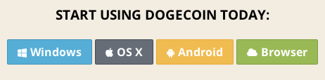

An alternate guide for a local wallet and faucets can be found at howtodoge.com. We did not realize we had picked a such similar domain and are very sorry shibes.
Anyways, your wallet is where you keep all your Dogecoins. In our guide, you will use a local wallet. This means all the coins are stored in a file on your computer, so if your computer spontaneously explodes, you will lose your coins! However you can and should make backups.
An alternative is an online wallet service, but this requires trust because they could turn out to be bad shibes and run off with your coins! Even good shibes running an online wallet can potentially be hacked! Note: you can have multiple wallets like having multiple bank accounts. For example, keep some in an online wallet for convenience and store the rest in secure and backed up local wallets.
First, go to the official site and grab the appropriate wallet for your operating system. "Browser" is for an online wallet, which we will not cover at this time. The download section looks like this:
Unzip / install (depends on your OS) and run the wallet! Windows and OSX have the same layout once opened.
When you first run the program it takes a while to sync. This is because all transactions are saved in something called a block chain. Your wallet must basically download the entire transaction history, so give it some time.
Now you have a wallet and can start receiving coins! When you select "much receive" you will have a single address. To receive Doge, just have people send to this address. Since it is difficult to type, right click the address and select copy OR select the address then click "copy address" at the bottom. If you were introduced to Doge via a tip, we cover how to collect it with your address on the tipping page.

If you want to track your sources of coins more effectively, you can create new addresses and give them labels from "much receive". For example, I can create and give out a new address to receive doge specifically from this guide, which will distinguish them in the history. All these addresses go to the same wallet though.
Note: it is safe to give this receive address to people you don't know, it is a one way street! Bad shibes cannot pull doge out from it.
Ready to get your first doge? There are sites out there known as faucets / water bowls which give out free doge. Faucets are great for poor, new, and non-mining shibes in need of some starter doge. These water bowls are filled by rich and generous shibes, so remember to give back when you are established! If they run out, they are dry until some shibe refills them.
To receive your free Dogecoin payout, all you have to do is give your receive address to the faucet site. Such generous! Payouts won't immediately show up in your wallet because they are added to the block chain, then you must sync up to that point.
Below are lists of faucets maintained by other shibes (not us).
There is also a "Pls send" button used for sending doge to addresses you know. Just fill out the fields and send!
To be written. Much patience, thanks!
To be written. Much patience, thanks!
Wallets are software and get important updates over time. We'll write up how to safely upgrade soon!